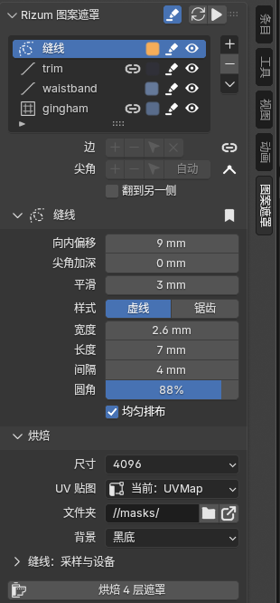

安装和第一张遮罩
装好插件，沿着下摆烘焙出第一张缝线遮罩。
安装
- 在 Blender 里安装：编辑 › 偏好设置 › 获取扩展，搜索 Pattern Masks。
- 用 zip 安装：获取扩展 › ▾ › 从磁盘安装…

- 1图案遮罩 标签在 3D 视图里按 N 打开侧边栏，点这个标签。英文界面里叫 Pattern Masks。
- 2面板上面是图层列表，接着是标边和尖角，再往下是选中图层的设置和烘焙。
添加缝线层
每种图案都是列表里的一层：缝线 每个物体只有一层，线稿 和 格纹 想加几层都行。
给它标出下摆
每一层只沿着自己的边画。在 Blender 里，要先进编辑模式选中边。
调针脚
尺寸都是模型上的真实毫米，模型多大都一样。
- 1向内偏移缝线离边多远。
- 2长度每一针多长。
- 3间隔针与针之间空多少。
烘焙
先保存 .blend，再点面板底部的烘焙按钮。每一层、每个材质各得到一张 16 位 PNG，放在 .blend 旁边的 stitch_ 文件夹里。
拿去画
在 Substance 3D Painter 里导入 PNG，把它用作填充图层的灰度遮罩。
其他软件的用法和文件命名，见 烘焙和使用。
会改动什么
插件只给网格加边和顶点属性，不会改动形状、UV 和材质。